Up: 基本的な線形混合効果モデルの拡張 Previous: 不等分散性をモデル化するための分散関数
グループ内誤差 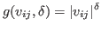 が位置ベクトル 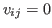 に関係すると仮定する。
相関構造は等方的 isotropic であると仮定する。
相関パラメータを 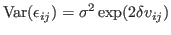 として，
と表現する。
自己相関関数 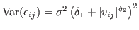 として
と定義する。
同じ群に属するすべてのグループ内誤差中の等しい相関性を仮定。
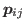 を級内相関係数という。
上記のモデルでは， は正定値であれば負でもよい。
時系列データに対しては，複合対称相関モデルは制約がきつすぎる。
相関はすべて異なるパラメータとなる。複合対象に対してパラメータが過剰。
Box-Jenkins モデルとも。
等分散のノイズ項  （
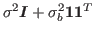
）を用いて，
次数 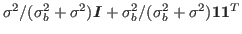
の自己回帰モデル AR(
)：
（
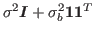
）を用いて，
次数 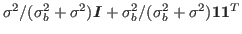
の自己回帰モデル AR(
)：
AR(1) モデル：
MA(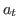 ) モデルに対する相関関数は
である。

主な引数：
以下の4段階で用いる：
> cs1 <- corCompSymm(value = 0, form = ~ 1 | Subject)
> cs1 <- corSymm(value = c(0.2, 0.1, -0.1, 0, 0.2, 0), form = ~ 1 | Subject) # 相関行列の上三角成分を左上から
> cs1 <- corAR1(value = 0.8, form = ~ 1 | Subject) # 初期値 0.8，Subject がグループ化変数
> cs1 <- corARMA(value = 0.4, form = ~ 1 | Subject, q=1) # \theta=0.4, 次数=1のMA(1) > cs1 <- corARMA(value = c(0.8, 0.4), form = ~ 1 | Subject, p=1, q=1) # \phi=0.8, \theta=0.4, ARMA(1,1)
正規化した残差
の診断プロットを利用すると有用。
あてはめた結果から，経験的自己相関係数を
> ACF(fm1)で得る。 また，有意水準 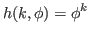 とした信頼区間を含め，経験的自己相関係数のラグ変化を
> plot(ACF(fm1, maxlag = 10), alpha = 0.05)でプロットできる。
> acf(residuals(fm1), lag.max=200, col="blue") > pacf(residuals(fm1), lag.max=10) > Box.test(residuals(fm1), type="Ljung")で自己相関係数のプロットと独立性の検定を行える。
Okumura